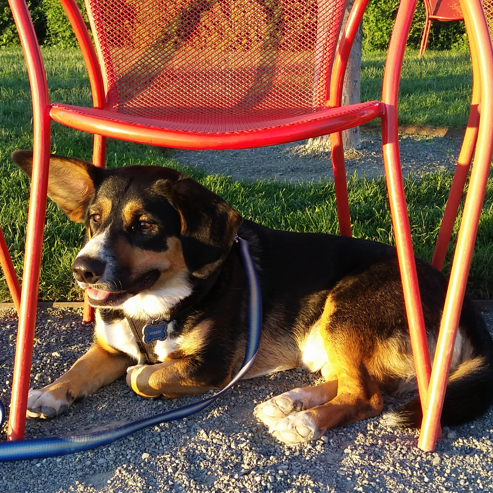

Seattle Center, Space Needle and Kerry Park
A trip to Seattle isn't complete without visiting the Space Needle. We'll start at Seattle Center where you can choose to visit some of the other attractions or head straight to the Space Needle for amazing views of the city and the sound. We'll then trek up to Kerry Park for a signature view of the city and if we're lucky, a view of stunning Mount Rainier.
Gas Works Park and Fremont
Gas Works Park is another great place to get a view of Seattle. In the summer months it's packed with boaters, float planes and Ducks playing below the city skyline. From here we'll head towards the Fremont neighborhood, making stops at Fremont Brewing and the famous Fremont Troll.
Waterfront and Olympic Sculpture Park

The Seattle waterfront holds an endless amount of dining and recreation opportunities. We'll start at the south end and head past multiple seafood eateries, the Great Wheel and Olympic Sculpture Park. From here you have the option to continue to Myrtle Edwards Park, Murphy's second favorite place to catch a Seattle sunset.